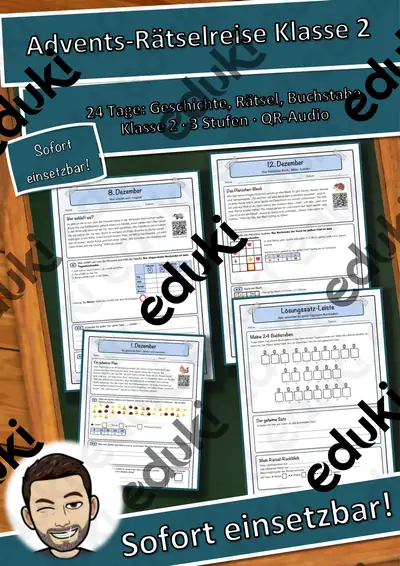

Lichterfeste in den Religionen – Diwali, Chanukka, Martinstag, Advent – Lesespurgeschichte mit Rätselaufgaben (Klasse 6)
Lichterfeste in den Religionen – Diwali, Chanukka, Martinstag, Advent – Lesespurgeschichte Ethik/Religion (Klasse 6)Schick deine Klasse auf eine Entdeckungstour durch das „Haus der Feste“! Priya, Noah, Lea und Yusuf aus der 6c erkunden gemeinsam eine Ausstellung über Lichterfeste im Stadtteilzentrum. Das kleine Öllämpchen Dipa begleitet sie. Von der Diwali-Ecke über den Rangoli-Tisch, die Laternenwerkstatt, die Mantel-Bühne, den Adventskranz und den Plätzchentisch bis zum Chanukka-Tisch, zur Dreidel-Ecke und in den Festsaal lernen die Kinder vier Lichterfeste aus verschiedenen Religionen kennen. Alle vier Feste stehen gleichwertig nebeneinander und werden ohne Wertung vorgestellt. Am Ende jedes Abschnitts verrät ein Hinweis den nächsten Ort auf dem Plan. Nur wer genau liest, findet den Weg und sammelt alle geheimen Buchstaben zum Lösungswort.
Die passende Lesespur für den Ethik- und Religionsunterricht in der 6. Klasse, für die dunkle Jahreszeit von Oktober bis Dezember und ideal auch für Vertretungsstunden. Geeignet für Mittelschule, Realschule, Gymnasium und Gesamtschule. Religionssensibel geschrieben: Jedes Fest bekommt gleich viel Raum. Das Material ist SOFORT EINSETZBAR und in DREI DIFFERENZIERUNGSSTUFEN (leicht ★ / mittel ★★ / schwer ★★★) angelegt.WICHTIG: Das komplette Material ist sowohl in FARBE als auch in SCHWARZ-WEISS enthalten – ideal zum Sparen von Druckkosten.DAS IST ENTHALTEN
- Lesespurgeschichte in 3 Niveaus (leicht, mittel, schwer)
- farbiger Plan des Hauses der Feste als Suchkarte
- Hörverstehen mit QR-Code zur MP3 (selbstständiges Hören mit Kopfhörern)
- vier Aufträge auf dem Weg: eine Zuordnung (Welches Licht gehört zu welchem Fest?), eine Rechenaufgabe, ein Quiz (Lichter, Feste, Bräuche) und ein Steckbrief
- Rätselseite (Wörter-Suchsel + Fragen rund um die Lichterfeste)
- Ausmalbild zum Thema
- ausführliches Lösungsblatt für die Lehrkraft
- alles zusätzlich als komplette Schwarz-Weiß-VarianteSO GEHT DIE LESESPURDie Schülerinnen und Schüler lesen ab START, finden im Text den nächsten Ort, suchen ihn auf dem Plan und lesen bei dieser Station weiter. An jeder richtigen Station gibt es einen Buchstaben. Eingeplante Sackgassen (Garderobe, Getränketisch, Klavier, Stuhlstapel) sind keine Stationen und dienen der Selbstkontrolle. Am Ende werden die gesammelten Buchstaben umgestellt und ergeben ein geheimes Lösungswort. (Die Lösungen sind selbstverständlich nur im Lösungsblatt für die Lehrkraft enthalten.)INHALTLICHER SCHWERPUNKTDiwali (Öllämpchen, Rangoli-Muster, Licht als Zeichen für das Gute und für Hoffnung), Martinstag am 11. November (Laternenumzug, Legende von der Mantelteilung), Advent (Adventskranz, Vorbereitung auf Weihnachten), Chanukka (Chanukka-Leuchter mit Helferkerze, Erinnerung an den Tempel in Jerusalem, Dreidel, in Öl Gebackenes). Gemeinsame Botschaft: Licht, Hoffnung und Gemeinschaft in der dunklen Jahreszeit. Dazu ein Sicherheitshinweis zu Kerzen und Öllämpchen.ABGEDECKTER LEHRPLAN (Klasse 6)
- Ethik (LehrplanPLUS Bayern) – Religionen und Feste: Feiertage verschiedener Religionen und Kulturen kennen, vergleichen und respektieren.
- Katholische und Evangelische Religionslehre – Feste im Jahreskreis, andere Religionen kennenlernen.
- Deutsch – Sachtexte sinnentnehmend lesen; einem Hörtext gezielt Informationen entnehmen (Hörverstehen mit MP3).
- Mathematik – einfache Rechenaufgaben und Summen.
Geeignet für Freiarbeit, Stationenlernen, Vertretungsstunden, Wochenplan und für die Wochen von Diwali bis Chanukka. Klassenstufe 6.
Ähnliche Materialien

Materialpaket Advent und Winter für die 6. Klasse: 7 Lesespurgeschichten mit Rätselaufgaben (Weihnachtsbasar, Saturnalien, Lichterfeste & mehr)

Chanukka Lückentext mit Wortspeicher Hörverstehen und Suchsel

Judentum Lückentext mit Wortspeicher Hörverstehen und Suchsel

Advents-Rätselreise Materialpaket Klasse 1–4: 3 Adventskalender mit Geschichten + Rätseln in 3 Stufen, QR-Audio

Advents-Rätselreise Klasse 3/4 – Adventskalender: 24 Geschichten + Rätsel in 3 Stufen mit Lösungssatz

Mensch und Natur in den Religionen – Lesespurgeschichte mit Rätselaufgaben (Klasse 7)

Advents-Rätselreise Klasse 2 – Adventskalender: 24 Geschichten + Rätsel in 3 Stufen mit Lösungssatz